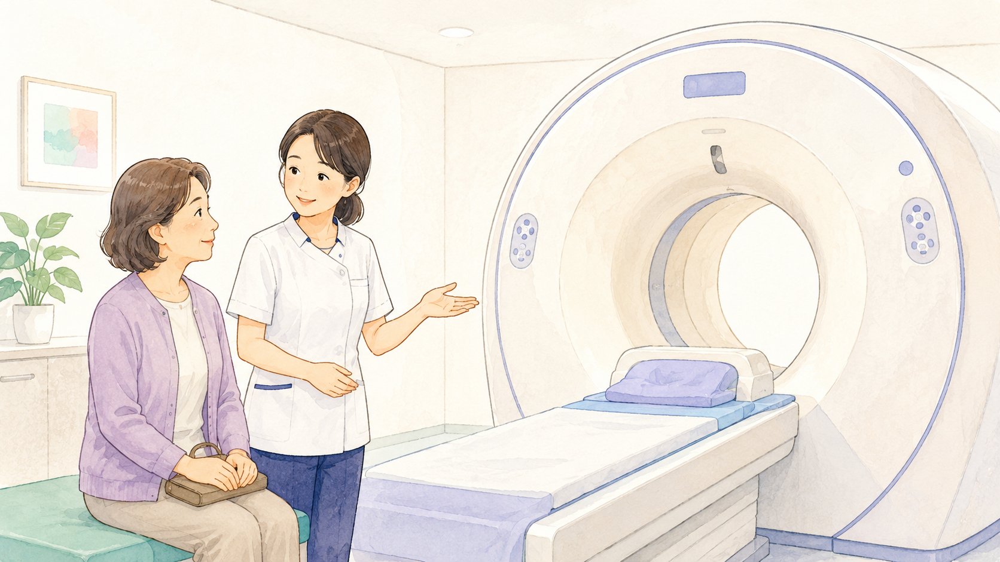
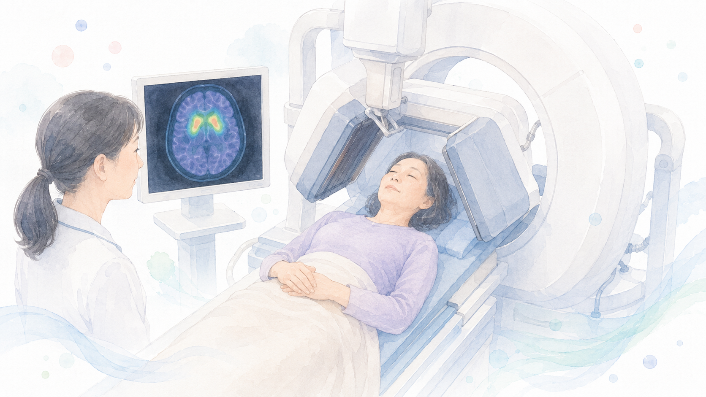
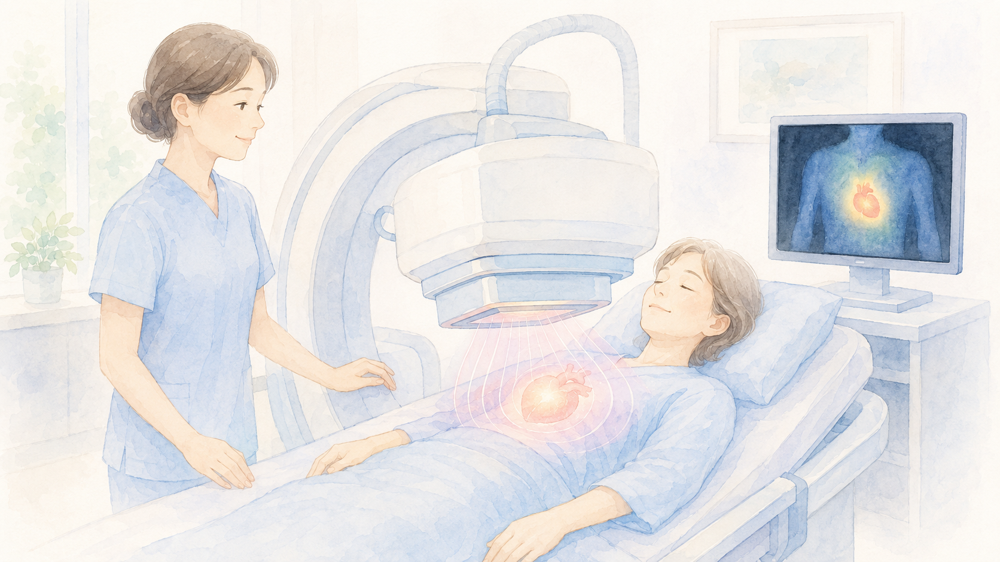

パーキンソン病の
診断に用いられる検査
パーキンソン病の診断は、問診・神経診察を中心に行われ、補助的に画像検査などが実施されます。
特定の血液検査やMRIだけで確定診断できるわけではなく、医師の総合的な判断が重要です。
1. 問診・神経診察（診断の基本）
問診（症状の経過を詳しく聞く）
いつから症状が出たか？（震え、動作の遅れ、歩行の変化など）
どの部位から始まったか？（片側の手や足が先に影響を受けたか）
症状の進行具合はどうか？
非運動症状（便秘、嗅覚低下、うつ、不眠など）はあるか？
家族歴（親族にパーキンソン病の人がいるか）
服用している薬の確認（薬の副作用で起こるパーキンソン症状(薬剤性パーキンソニズム)の可能性を検証するため）
神経診察（身体の動きを詳しくチェック）
安静時の震え（静止時振戦）の有無
動作の遅さ（寡動）や筋肉のこわばり（筋強剛）があるか
歩行の様子（すり足歩行、歩幅の狭さ、突進歩行など）
方向転換や姿勢のバランスが取れるか
手の細かい動作ができるか（指をすばやく動かせるか）
2. 画像検査（補助診断）
パーキンソン病は脳のMRIやCTで直接診断できる病気ではありませんが、似たような病気を見分けるために画像検査を行うことがあります。
脳MRI・CT検査

- 脳卒中や脳腫瘍などの他の疾患を除外する目的で実施。
- パーキンソン病自体にはMRIで特徴的な所見は見られないが、他の病気（進行性核上性麻痺、多系統萎縮症など）との鑑別に役立つ。
ドーパミントランスポーターシンチグラフィー（DATスキャン）

- 脳のドーパミン神経の働きを評価する検査。
- パーキンソン病ではドーパミン神経の働きが低下しているため、その異常を確認できる。
- 脳血管性パーキンソニズム(小さな脳梗塞がたくさんできて起こる)や薬剤性パーキンソニズムとの鑑別にも有用。
- パーキンソン病以外でも、多系統萎縮症や進行性核上性麻痺などのいくつかの疾患でDATスキャンに異常がでてしまうので、他の検査や身体所見と合わせて判断
MIBG心筋シンチグラフィー

- 自律神経障害の有無を調べる検査。
- パーキンソン病では心臓の交感神経が障害され、MIBGの取り込みが低下。
- レビー小体型認知症でも異常がでる。
- DATスキャンでは区別できなかった、進行性核上性麻痺や多系統萎縮症などとの区別が可能になる。
PET検査（ドーパミン代謝の評価）
研究レベルでは有用だが、一般診療ではあまり行われない。
3. 薬による診断（L-ドーパ試験）
L-ドーパ試験
- パーキンソン病の特徴として、「L-ドーパ（レボドパ）」という薬がよく効くことが挙げられます。
- L-ドーパを試験的に投与し、症状の改善があるかどうかを確認する。
- 改善が見られた場合、パーキンソン病の可能性が高い。
- ただし、進行した症例や類似疾患でも一時的に改善することがあるため、総合的な判断が必要。
4. 鑑別診断（パーキンソン病に似た病気を除外する）
パーキンソン病と似た症状を示す病気（パーキンソン症候群）があるため、誤診を防ぐために慎重な診断が必要です。
進行性核上性麻痺（PSP）
バランス障害が早期から強く、転倒しやすい。目を上に向ける動きの障害が特徴。頭部MRIで中脳という部分の一部が萎縮
多系統萎縮症（MSA）
自律神経症状（血圧低下、排尿障害）が強く、パーキンソン病の薬が効きにくい。MRIで基底核、小脳、脳幹という部分が一部萎縮する
大脳皮質基底核変性症（CBD）
片側の手足が使いにくく、動かそうとしても固まる。手の動かし方がわからない、手足がねじれる（ジストニア）、言葉をうまく話せない、などの症状が現れる。MRIでは片側の大脳の委縮がみられる。
薬剤性パーキンソニズム
一部の抗精神病薬、吐き気止め、胃薬（特にドーパミン遮断作用のある胃薬）が原因。薬を中止すれば改善することが多い。
レビー小体型認知症（DLB）
認知機能の低下が初期から目立ち、幻視（はっきりした幻覚）が出ることが多い。パーキンソン病とはとても似ている疾患で、完全に区別することは難しい。
5. まとめ

基本的な診断
問診と神経診察（症状の評価、運動のチェック）
似て異なる疾患を除外するためのMRI・CT
ドーパミントランスポーターシンチ（DATスキャン）でドーパミン神経の評価
MIBG心筋シンチで自律神経の評価
L-ドーパ試験で薬の反応を確認